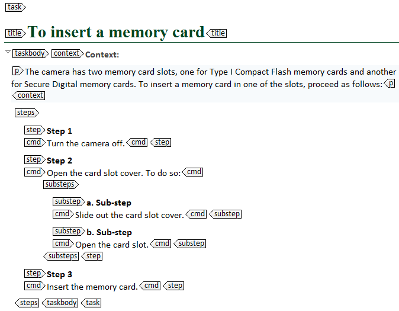
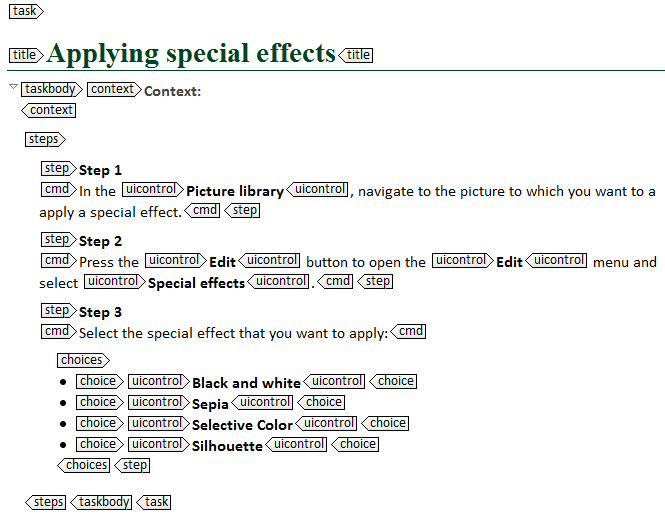
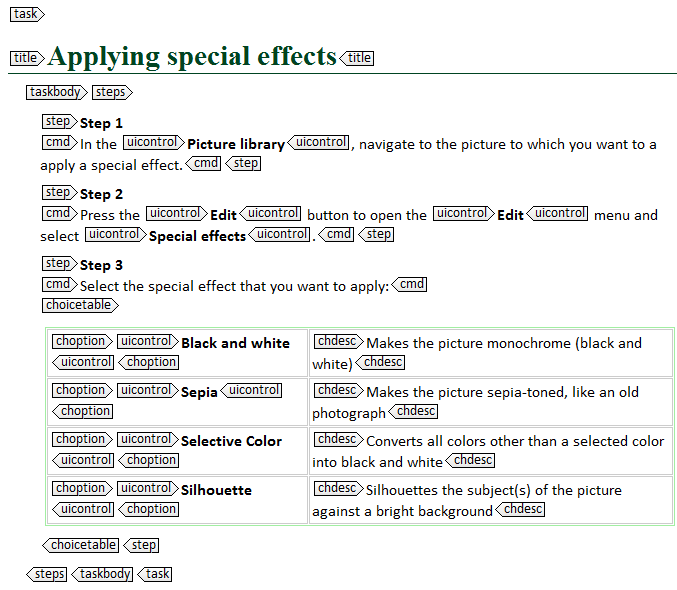

---
# Generated from DITA source
layout: 'base'
title: 'Substeps and choices'
index: '../toc.html'
src: 'en/co_substeps_choices_choicetable.dita'
---
Substeps and choices
A step can include substeps or choices. To insert substeps and choices into a <step> element, you use the <substeps>, <choices> and <choicetable> element.
<substeps>
To limit the number of steps in your task, you can add related steps as substeps to a single step. You then have to insert the <substeps> element after the <cmd> element of that step. By default, substeps are displayed in the output as lettered steps.

If you use substeps, take into account the following guidelines:
The main step has to state the goal of the substeps. Do not use vague sentences like "Follow these steps": they give users no idea of what action the substeps will describe.
Avoid using substeps inside other substeps. Nesting too many steps makes it hard for users to follow the procedure.
<choices> and <choicetable>
If users have to make a choice when executing a particular step, you have to add choices to that step. To do so, you can either use the <choice> or the <choicetable> element. The <choice> element will show the choices as a bulleted list, while the <choicetable> element will display them in a table.
There are no strict rules for when to use regular choices and when to use a choice table. You can, however, adopt the following best practices:
Only use the <choices> element for simple choice lists. For example, it is perfectly suitable to present a list of simple options from which the users have to select the one they need.

Use the <choicetable> element as soon as the choices become more complex. For example, if you also want to specify when the user has to select a particular option, a table is more suitable than a list.

Note: Using a choice table instead of regular choices can also help you to reduce the number of words in your topic. By using a <choicetable> in the example above, you do not have to write "If you select Black and white, the picture will become monochrome", "If you select Sepia, the picture will become sepia-toned"...
To make a <choicetable>, you can use the following elements:
<chhead>: contains specific heading text, inside <choptionhd> and <chdeschd> elements.
<choptionhd>: contains a heading for the options from which a user chooses.
<chdeschd>: contains a heading for the list of descriptions of options from which a user chooses.
<chrow>: contains a <choption> and <chdesc> element.
<choption>: contains an option that a user could choose.
<chdesc>: contains a description of an option that a user could choose.